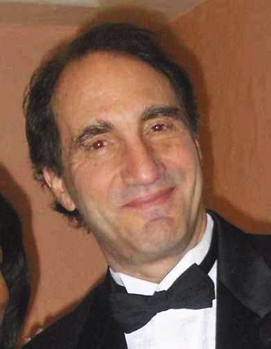
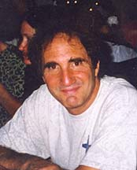
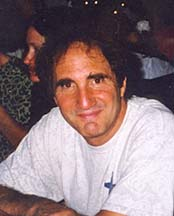
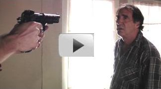
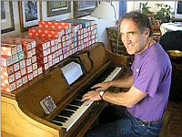

Jim
Terr headshots,
résume &
acting clips
http://www.bluecanyonproductions.com/jtclips.html

(previous "best" headshot
at bottom of page)
Current acting reel - 90 seconds
 
 
PERFORMANCE CLIPS
(Short film - July 2009 ) |
Stage play 2010 (4-minute scene) |
"MONSTERS BALL" scene |
| Karl
Rove puts out hit on JT's acting career (view). (See also "Bastard" video below; the one acting note not represented in this Rove piece) |
 "Do You Know Your Credit Score?" |

{kind=link}
|

"Player Piano" Just a spontaneous little moment. YouTube view (over 130,000 views, for some reason!) |
"Santa Rosa": Hadley Harper Christopher Wright, writer/director HollywoodMe Interview
JIM TERR
(SAG eligible)
Age range: 50-60 Video reel here
Height: 6'
Weight: 175
Hair & Eyes: Brown
Representation: (New Mexico) APPLAUSE
TALENT (505) 262-9733
Film:
Hustler in short film "Invested", 2009
Lead roles
in 2 student films, College of Santa Fe, November 2008:
1. Billy Bob Thornton role from "Monster's Ball";
2. "Good cop" in detective comedy.
Role of Peter in "Dog Day", Duke City Shootout 2006, dir.
by Joachim Jung
Conspiracy Man in "Punchdrunk 2" - Sure Sure You Bet Productions, 2001
Jesus Man in "Punchdrunk" - Sure Sure You Bet Productions, 2000
Doctor Bivins in "Countdown" (short
film) Hadley Harper Photographics, 1999
Richard in "God Drives a Pontiac" feature film, Justified Pdns, Santa
Fe '93
Country singer (original song) in "And God Created Woman" (Vestron,
1988),
directed by Roger Vadim, starring Rebecca DeMornay
TV / Video:
Jimbug (outsider artist) in short film, "Jimbug: Folk Artist",
2005
Interviewer in "J.Lo, MD", short film, 2005
"BuDDy" (fat c/w singer) in several videos, Blue Canyon Pdns, 2002-2006
John in "Signs of Life," Flicks on 66, 2002
Role of Director in "The Wrong Guy," Flicks on 66, 2001
Playboy in "Santa Rosa" TV pilot, Kokopele Productions, 2001
Host of "Wordsworth" TV game show, SFCTV 6, 1998-2000
Role of producer in "The Nary a Stitch Project", film parody, 1999
Roy Scheider lookalike in video promoting NM filming, Kokopele Pdns '97
Caveman/businessman (solo featured role) "Understanding Cars"
(Discovery
Channel, Learning Channel) Talking Turkey Productions, 1997.
Homeless Man (solo featured role) "Healthcare for the Homeless" TV
spot, Mark IV Productions, 1997.
Doctor Ernest Flange, "Negativity Central"
(comedy short), Blue Canyon Productions, 1996.
STAGE:
Vice consul Hodge in David Gow's "Relative Good", Teatro Paraguas, SFe, 2010
"Larry"
(co-lead) in "Bastard", Santa Fe Playhouse, Feb. 2007
Doctor Bernhard Forster in "All Too Human", Santa Fe Playhouse,
March 2006
Detective
Baylen in "Glengarry, Glen Ross" Santa Fe Playhouse, 2003.
Co-lead (role of "Man") in "Riders", Santa Fe Playhouse, 2003
White Man in "Talking Couch" with Chris Eyre & Drew LaCapa, 2002
Elliot Cummings in "The Mystery of Peter Hand", Las Vegas, NM, 1994
Claire (co-lead) in "Elder Hostile" (Concerned Pdns, College of Santa
Fe, 1993).
Marley (co-lead) in "Scrooge & Marley", Santa Fe Community Theater,
1992.
Paco, "Man of La Mancha", Southwest Rep. Theater, Santa Fe, 1991.
Scanlon in "One Flew Over the Cuckoo's Nest," Santa Fe Perf. Arts Company,
1991.
VOICE-OVERS
/ NARRATION:
Numerous award-winning and short and lengthy documentaries, radio & TV commercials,
instructional tapes (samples available).
SKILLS:
Original singer/songwriter, comedy & serious
(numerous songs broadcast on major radio and TV networks and news programs).
Various "country" dialects. French accent good, Spanish excellent, with
supplied script.